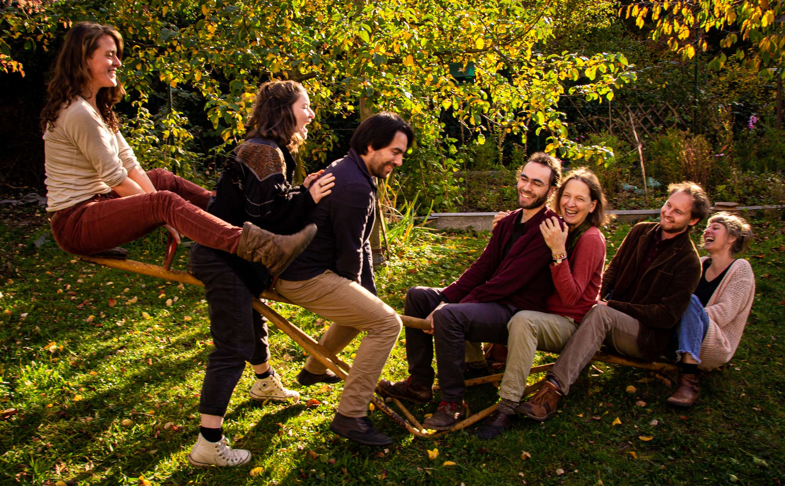

Unser Team
Wir sind eine Initiative von Gestalttherapeut*innen (i.A. oder mit abgeschlossener Ausbildung am GestaltForum Freiburg mit verschiedenen Schwerpunkten in der Begleitung von Menschen.
Majke Kunze
Psychologin (M.Sc.), Gestalttherapeutin (i.A.) Schwerpunkt Körperpsychotherapie & kreative Medien, Hypnosystem-Coach, Traumapädagogin i.A. Mich drängt seit jeher die Frage nach dem „Wahren“: was ist das eigentlich? Was steckt hinter / in all den Möglichkeiten, die Welt zu sehen? Wie finde ich meine ganz eigene Wahrheit, meinen Wesenskern? Meine Vision in diesem Fragen ist es, in ein sinnhaftes, erfülltes und sprudeliges Leben hinein zu leben. Dabei ist Gestalt für mich ein wunderbarer Boden, auf dem ich meine Schritte setzen kann. Es ermöglicht mir den Zugang zu dem, was wirklich gerade ist, hinter all den Schutzvorhängen, Mauern und Fassaden. Wer bin ich noch, neben der die ich gelernt habe zu sein? Mit der Haltung der Gestalttherapie trete ich (wieder) in einen (echten) Kontakt mit mir und mit der Welt um mich herum. Injedem gegenwärtigen Augenblick neu. In meiner Begleitung von Menschen bin ich experimentierfreudig,nah, achtsam und haltgeben. Ich arbeite gern über und mit demKörper, der Stimme und deinen ganz eigenen inneren Bildern.
Patricia Kleber
Sozialpädagogin M.A., Gestalttherapeutin i.A., Heldenreiseleiterin i.A., Natur- und Erlebnispädagogin Seit ich die Gestalttherapie für mich entdeckt habe, lebe ich eine neue Form der Begegnung mit mir selbst und anderen, die immer mehr Tiefgang, Nähe und Wahrhaftigkeit in mein Leben einlädt. Den kraftvollsten Moment der Gestalttherapie stellt für mich die Entscheidung dar, wirkliche Verantwortung für das Fühlen und Handeln zu übernehmen und dies in den ehrlichen Austausch mit den Mitmenschen zu bringen. Für diese Haltung gehe ich und investiere neben meiner Tätigkeit als Sozialpädagogin meine Zeit und Lust dafür, sie in die Welt weiter zu tragen. In der therapeutischen Arbeit liebe ich es ganz besonders, die verschiedenen Anteile in uns miteinander in Beziehung zu setzen und auf diese Weise die Möglichkeit zu öffnen, den Weg zu Selbstmitgefühl und inneren Frieden zu beschreiten. Ausbildung zur Heldenreiseleiterin ergänzt meinen liebevoll konfrontativen Begleitungsstil durch die Fähigkeit, Menschen in besonders intensiven und ausdrucksstarken Prozessen im geschützten Rahmen zu begleiten.
Melina Weiner
Ich bin glückliche Beschreiterin alternativer Bildungswege, Reisende und Suchende nach sinnstiftendem Sein in dieserWelt. Durch meine Wildnispädagogikausbildung forsche und lebe ich mit der Weisheit der Natur und arbeite mit dem Kontakt zur Erde und zyklischem Leben. Tanz und Körperarbeit sind wichtige Bestandteile meines Lebens, sie vertiefen und prägen mein in Beziehung gehen zu meinen Mitmenschen. Ich bin Gestalttherapeutin (i.A.) ein besonderer Fokus ist hier für mich die Leitung von gruppentherapeutischen Settings. Ein weiteres Lern und Forschungsfeld ist die Prozessbegleitung zur Projektumsetzung für Gemeinschaften und Teams mit der Methode Dragon Dreaming.
Martin Pellmann
Heilpraktiker für Psychotherapie, Gestalttherapeut, Pessotherapeut (i.A)Gestalt ist für mich eine Art in der Welt zu sein. Achtsam , ein Abenteuer, immerwieder frisch, aufregend und bietet einen Raum zum vertrauen und hingeben.In der therapeutischen Begleitung ist mir wichtig gemeinsam zu schauen was fürdich gerade wirklich wesentlich ist und dir dabei zu ermöglichen in deinemeigenen Tempo zu bleiben.
Wir freuen uns, dich kennen zu lernen – in all deinen Facetten!